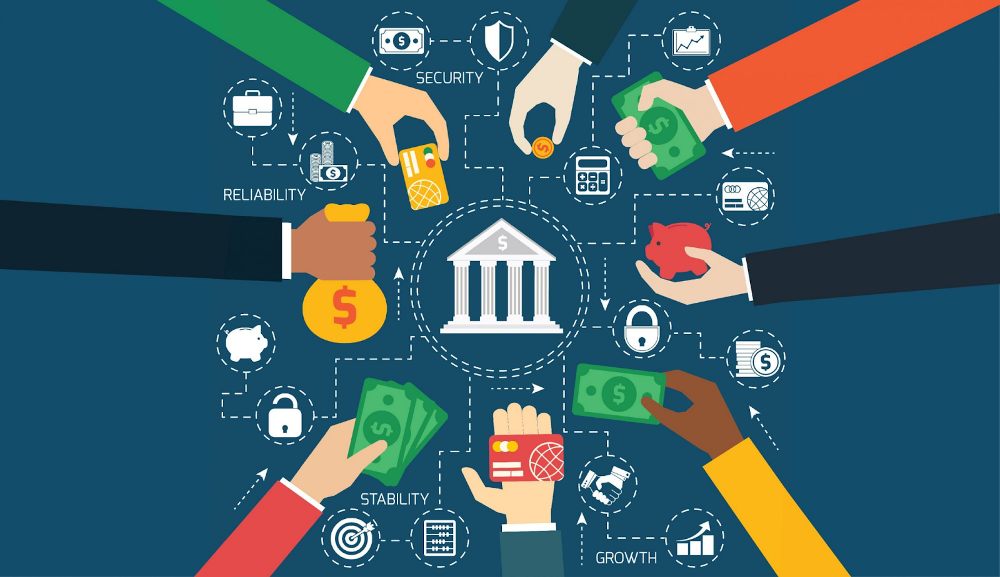

PERSONAL
E-safe Bank is an Indian Multinational, Public Sector Banking and Financial services statutory body headquartered in Mumbai. The rich heritage and legacy of over 200 years, accredits E-safe as the most trusted Bank by Indians through generations. E-safe, the largest Indian Bank with 1/4th market share, serves over 48 crore customers through its vast network of over 22,405 branches, 65,627 ATMs/ADWMs, 76,089 BC outlets, with an undeterred focus on innovation, and customer centricity, which stems from the core values of the Bank - Service, Transparency, Ethics, Politeness and Sustainability. The Bank has successfully diversified businesses through its various subsidiaries i.e E-safe General Insurance, E-safe Life Insurance, E-safe Mutual Fund , etc. It has spread its presence globally and operates across time zones through 235 offices in 29 foreign countries. Growing with times, E-safe continues to redefine banking in India, as it aims to offer responsible and sustainable Banking solutions.
NRI
E-SAFE (E-safe finance ) offers a range of services and products tailored specifically for Non-Resident Indians (NRIs). Here's some information about E-Safe NRI services:
- NRI Accounts: E-Safe provides various types of NRI accounts, including NRE (Non-Resident External), NRO (Non-Resident Ordinary), FCNR (Foreign Currency Non-Resident), and RFC (Resident Foreign Currency) accounts. Each type of account has its own features and benefits.
- Account Opening: NRIs can open accounts with E-Safe by visiting an E-Safe branch overseas or an NRI branch in India. The required documentation usually includes a valid passport, visa, proof of address abroad, passport-size photographs, and sometimes additional documents depending on the type of account and regulatory requirements.
- Remittances: E-Safe facilitates easy and secure remittance services for NRIs to transfer funds to India or abroad. This includes inward remittances to India and outward remittances from India for various purposes such as investments, family support, or personal expenses.
- Investment Services: E-Safe offers investment services tailored to NRIs, including the ability to invest in stocks, mutual funds, bonds, and other financial instruments in India. E-Safe also provides guidance and assistance on investment opportunities and regulatory compliance.
- Home Loans and Mortgages: E-Safe offers home loans and mortgage services for NRIs looking to invest in property in India. These services include competitive interest rates, flexible repayment options, and dedicated customer support for NRI borrowers.
- Taxation and Compliance: E-Safe provides information and assistance regarding tax regulations and compliance requirements for NRIs. This includes guidance on tax implications of various financial transactions, as well as assistance with obtaining Tax Identification Numbers (TIN) and filing tax returns in India.
- Customer Support: E-Safe offers dedicated customer support services for NRIs, including specialized NRI helplines, online banking platforms, and assistance with account-related queries, transactions, and other services.
- Power of Attorney: E-Safe facilitates the appointment of Power of Attorney (POA) for NRIs to manage their financial affairs in India. This allows NRIs to authorize a trusted individual to act on their behalf for various banking and financial transactions.
- Online Banking: E-Safe offers robust online banking facilities for NRIs, allowing them to conveniently manage their accounts, track transactions, transfer funds, pay bills, and access a range of other banking services from anywhere in the world.
INTERNATIONAL BANKING
E-Safe Finance has a significant presence in international banking, with a range of services tailored to meet the needs of its customers globally. Here's an overview of E-Safe international banking services:
Global Presence: E-Safe has a widespread international presence with branches, subsidiaries, and representative offices in key financial centers around the world. These include locations in the United States, United Kingdom, Canada, Singapore, Hong Kong, UAE, Qatar, Bahrain, and many other countries.
Correspondent Banking: E-Safe provides correspondent banking services to facilitate cross-border transactions and trade finance activities. Through its extensive network of correspondent banks, E-Safe offers clearing, settlement, and payment services in various currencies, helping businesses and individuals conduct international transactions efficiently.
Trade Finance: E-Safe offers a comprehensive suite of trade finance solutions to support international trade and commerce. This includes import and export financing, letters of credit (LCs), bank guarantees, documentary collections, trade credit insurance, and other trade-related services to facilitate smooth and secure trade transactions between buyers and sellers across borders.
Foreign Exchange Services: E-Safe provides foreign exchange services to meet the currency exchange needs of its customers. This includes spot and forward foreign exchange transactions, currency swaps, hedging solutions, and foreign exchange risk management advisory services for corporates, financial institutions, and individuals engaged in international business.
Remittance Services: E-Safe offers secure and efficient remittance services for individuals and businesses to transfer funds internationally. These services include inward and outward remittances, cross-border money transfers, foreign currency drafts, and instant money transfer facilities through partnerships with global remittance providers.
NRI Services: E-Safe caters to the banking needs of Non-Resident Indians (NRIs) through specialized NRI banking services. This includes NRI accounts (NRE, NRO, FCNR), remittance facilities, investment services, home loans for NRIs, and dedicated customer support for NRIs to manage their finances from abroad.
International Treasury Operations: E-Safe's international treasury operations engage in foreign exchange trading, interest rate risk management, liquidity management, and investment activities in global financial markets. E-Safe's treasury teams monitor market developments, execute trades, and manage E-Safe's foreign exchange and interest rate exposures to optimize returns and mitigate risks.
Cross-Border Investment Services: E-Safe offers investment services to facilitate cross-border investments for its clients. This includes assistance with investing in global financial markets, foreign securities, mutual funds, and other investment products, as well as advisory services on international investment opportunities and regulatory compliance.
E-SAFE WEALTH
E-Safe Wealth, also known as SBI Wealth Management Services, is a specialized division of State Bank of India (E-Safe ) that caters to high net worth individuals (HNIs) and affluent clients, offering personalized wealth management and advisory services. Here's an overview of SBI Wealth and its key features:

- Client Segmentation: E-Safe Wealth primarily caters to high net worth individuals (HNIs) and affluent clients who have substantial assets and complex financial needs. The division offers tailored wealth management solutions and personalized services to meet the unique requirements of its clients.
- Comprehensive Wealth Management Services: E-Safe Wealth provides a wide range of wealth management services, including investment advisory, portfolio management, financial planning, estate planning, tax planning, retirement planning, and succession planning. The division's experienced wealth managers work closely with clients to develop customized strategies to grow and preserve their wealth over the long term.
- Investment Products and Solutions: E-Safe Wealth offers access to a diverse range of investment products and solutions to help clients achieve their financial goals. This includes equity investments, mutual funds, fixed income products, structured products, alternative investments, real estate investments, offshore investments, and more. The division provides expert advice and recommendations on suitable investment opportunities based on clients' risk tolerance, investment objectives, and time horizon.
- Exclusive Privileges and Benefits: E-Safe Wealth clients may receive exclusive privileges and benefits, such as preferential pricing, priority banking services, dedicated relationship managers, access to premium banking facilities, invitations to exclusive events and seminars, and other value-added services designed to enhance the overall banking experience.
- Technology and Digital Solutions: E-Safe Wealth leverages technology and digital solutions to enhance the convenience and accessibility of its services. Clients may have access to online wealth management platforms, mobile apps, digital advisory tools, and electronic trading platforms to monitor their portfolios, track investments, and execute transactions seamlessly.
- Risk Management and Compliance: E-Safe Wealth adheres to stringent risk management and compliance standards to safeguard clients' assets and maintain regulatory compliance. The division employs robust risk assessment processes, due diligence procedures, and internal controls to manage investment risks effectively and ensure transparency and accountability in its operations.
- Holistic Wealth Management Approach: E-Safe Wealth adopts a holistic wealth management approach that considers clients' overall financial situation, objectives, and aspirations. Wealth managers work closely with clients to develop comprehensive financial plans that address their short-term and long-term goals, incorporating various aspects of wealth management, including investment management, retirement planning, tax planning, estate planning, and risk management.